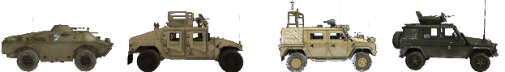

Le Basi
Principalmente, dovresti unirti a una squadra. Alcuni server addirittura lo richiedono ed espellono i giocatori solitari dopo un periodo di avvertimento. Il gioco è decisamente più divertente quando si gioca in un squadra funzionante. Se hai bisogno di aiuto, chiedi semplicemente ai giocatori nella tua squadra cosa fare. Se possibile, usa il Mumble. È comunemente usato in PR. Giocare a PR:BF2 senza un microfono non ti darà l'esperienza completa, quindi è un investimento saggio. Se nessuno risponde, prova a unirti a un altro squadra o usa la chat generale. Ci sono molti membri della comunità disponibili che danno il benvenuto ai nuovi giocatori e li aiutano. Ci aspettiamo che tu abbia una comprensione di base di BF2 quando si tratta di navigare nei menu in gioco, come il punteggio, la mappa e la selezione del kit. Puoi sempre avviare BF2 e fare il tutorial lì per familiarizzare con la sua interfaccia. Questo manuale si concentrerà sulle differenze con BF2.
Selezione del Kit e spawn
- Quando inizi a giocare, è consigliabile spawnare solo come fuciliere con un'ottica a tua scelta. In questo modo puoi imparare meglio le basi fondamentali del gameplay.
- Dopo aver imparato le basi della fanteria, puoi chiedere al tuo SL (Capo Squadra) di assegnarti un kit specializzato quando ti senti pronto per la sfida. Se vuoi provare nuove attrezzature o un veicolo, puoi farlo facilmente in modalità cooperativa (co-op) senza arrecare disagio ai membri della tua squadra o mettere a rischio le risorse della tua fazione.
- I kit specializzati e più difficili da utilizzare sono generalmente limitati e possono essere ottenuti solo se vengono soddisfatte determinate condizioni all'interno di un plotone. Questi kit riservati sono a disponibilità limitata per la fazione e dovresti sempre chiedere prima di richiederne uno.
- I kit possono essere richiesti dal menu principale di spawn (come in BF2), da una cassa di rifornimento (vedi Logistica) o dalla parte posteriore di un APC / IFV. Per avere la possibilità di richiedere un kit da una cassa di rifornimento o da un veicolo, devi far parte di una squadra.
In PR:BF2 non puoi spawnare presso ogni punto di controllo che la tua fazione controlla. I punti di spawn disponibili in PR:BF2 sono i seguenti:
- Il punto di raduno della tua squadra (RP) è un cerchio verde che circonda un punto di spawn con il numero della tua squadra adiacente. La durata del punto di raduno della tua squadra dipende dalla sua posizione rispetto alla Base Operativa Avanzata (FOB) della tua fazione. Nota: Se spawni su un punto di raduno di un altra squadra, spawni automaticamente sul tuo punto di raduno o su una qualsiasi FOB nelle vicinanze. Se nessuno di questi è disponibile, sarai spostato alla base principale della tua fazione. Se il punto di raduno della tua fazione viene conquistato dal nemico, scomparirà. I punti di raduno sono disponibili solo per le forze convenzionali. (vedi Strutture Posizionabili)
{% figure "../assets/rally.png" %} Un punto di raduno. {% endfigure %}
- Punti di raduno di fazione specifici della mappa. Di solito scadono 5 minuti dopo l'inizio del round e possono essere utilizzati da tutta la fazione. Consentono anche a un massimo di 12 persone di spawnare su di essi prima che scompaiano.
- Il punto di raduno del comandante. Questo RP può essere posizionato solo dal comandante, a condizione che siano presenti più capi squadra nelle vicinanze del CO. Sulla mappa, apparirà come un punto di raduno con una "C" accanto.
- Base operativa avanzata posizionabile (FOB) o nascondigli possono essere utilizzati da tutta la squadra per spawnare, ma devono essere costruiti prima di diventare operativi. Sulla mappa appariranno come punti di spawn con un triangolo verde. Diventano operativi 90 secondi dopo essere stati costruiti. Diventano inattivi per 30 secondi se è presente 1 nemico entro 10m, 2 nemici entro 50m, 4 nemici entro 100m o 8 nemici entro 150m. (vedi Strutture Posizionabili)
- Nel modalità di gioco "Insurgency", la fazione degli in difesa può spawnare presso le casse armi che non sono state rivelate al nemico, questa è chiamata cassa sconosciuta. Questo spawn viene disabilitato anche se il nemico si avvicina troppo, come per le FOB.
{% figure "../assets/fob.png", "../assets/hideout.png", "../assets/cache-weapon.png" %} FOB, Nascondiglio e cassa di armi. {% endfigure %}
- Il tuo quartier generale, base principale della tua fazione o FOB permanente. Questo è l'unico punto di spawn sempre disponibile.
{% figure "../assets/acv.png" %} Veicolo Corazzato del Comando (ACV) si trova solo nelle basi principali. {% endfigure %}
- Alcune mappe presentano spawn con paracadute, dove viene simulato un assalto aereo. Questi saranno visualizzati tramite marker di spawn in movimento sulla minimappa. Scegli uno di essi e spawnerai con un paracadute che si apre automaticamente.
Interfaccia di gioco (HUD)
- Nell'HUD di gioco di PR:BF2, i giocatori ricevono messaggi specifici per il giocatore che possono essere visti solo dal giocatore stesso. Sono utilizzati per fornire feedback ai giocatori su diversi eventi in gioco, ad esempio:
- Il motivo per cui al giocatore non è stato assegnato il kit richiesto.
- Il motivo per cui la risorsa posizionabile richiesta dal giocatore non può essere costruita.
- Che il giocatore deve uscire dal veicolo o dal posto attuale per evitare punizioni.
- PR utilizza anche Notifiche dal Quartier Generale (HQ), che vengono visualizzate come grandi testi arancioni nell'angolo in alto a sinistra dello schermo. Queste notifiche forniscono aggiornamenti sugli obiettivi attuali, il progresso della missione e altri messaggi essenziali.
- I messaggi diretti degli amministratori del server e alcuni tipi di notifiche di gioco appariranno in testo arancione vicino al centro dello schermo. Alcuni di questi sono solo informativi, mentre altri, in particolare i messaggi degli amministratori del server, possono richiedere la tua attenzione.
- I puntatori di tiro sono stati rimossi dallo schermo. Per sparare con precisione, devi premere il tasto di mira alternativo per puntare con la tua arma, o utilizzare il BUIS per il combattimento in ambienti ravvicinati (vedi il capitolo sulle armi).
- La maggior parte delle icone 3D è stata rimossa per tutti i giocatori. È fondamentale identificare i tuoi bersagli prima di impegnarli per evitare il fuoco amico. Imparare a distinguere diverse mimetiche, bandiere e la forma del profilo della fanteria delle fazioni ti aiuta a identificare un nemico più velocemente. Ad esempio, per individuare un Caposquadra, cerca un'antenna radio che si estende verso l'alto dal suo zaino.
- Non c'è una barra dello stato di salute che indica il tuo stato vitale. (vedi Gestione della Salute)
- Il contatore di munizioni mostra solo la modalità di fuoco dell'arma e il numero di caricatori rimanenti.
- Per stimare la quantità di munizioni rimaste nel tuo caricatore, puoi aprire il menu radiale delle comunicazioni (Q) per vedere un indicatore visuale della quantità di munizioni rimaste.

- Il medico può vedere l'andamento del processo di cura di un soldato nell'HUD nell'angolo in basso a destra. La fanteria può vedere allo stesso modo quanto manca alla fine del processo di costruzione di un oggetto posizionabile.
- Non ci sono messaggi di uccisione (ad eccezione del fuoco amico). Anche la schermata del punteggio non mostrerà chi è vivo o morto nella squadra nemica. Se hai bisogno di sapere se qualcuno è morto, dovresti cercare il suo corpo.
- Solo i veicoli aerei utilizzano una mini-mappa permanente nell'HUD. La mappa sovrapposta completa è disponibile per tutti.
- La mappa e il livello attuale possono essere visualizzati nella parte superiore dello schermo quando si apre la mappa con il menu squadra/kit.
- Utilizzando la piccola freccia verrà visualizzata la schermata delle informazioni attuali della mappa delle risorse di tutti i veicoli presenti sulla mappa, inclusi i tempi di respawn dei veicoli amichevoli e se spawnano con un ritardo o se respawnano dopo essere stati distrutti. I mortai o l'artiglieria fuori mappa, noti anche come attacchi ad area, sono solitamente limitati a 3 o 4 utilizzi e possono essere utilizzati solo dopo lunghi periodi di attesa.
{% figure "../assets/assets.png" %} Schermata delle informazioni sulle risorse nella mappa attuale. {% endfigure %}
- I ticket rimanenti della tua fazione e il tempo rimasto possono essere visualizzati solo dalla schermata della squadra. I ticket dei nemici non vengono visualizzati.
- La soppressione avviene quando sei sotto il fuoco ravvicinato di fucili, armi pesanti o esplosioni vicine. Lo schermo apparirà più scuro e diventerà sfocato, come se stesse tremando. Questo effetto simula la capacità ridotta di reagire con un fuoco efficace mentre sei soppresso dal nemico.
{% figure "../assets/suppresion.png" %} Vista normale in gioco (sinistra) ed effetto di soppressione in azione (destra). {% endfigure %} * Nella parte inferiore sinistra dello schermo si trova una barra della stamina. Correre e saltare ridurranno la stamina disponibile, mentre non correre o saltare la ripristinerà lentamente. Quando la stamina è stata ridotta al 50% o meno, indicato da lampeggio, non sarà più possibile correre, ma sarà ancora possibile saltare. * Quando un giocatore è morto, non sarà possibile rianimarlo, e verrà visualizzata una schermata nera con un messaggio apposito invece di vedere l'ambiente circostante. * La tua arma devierà e diventerà imprecisa a seconda della quantità di movimento che effettui. Quando punti con la mira, comparirà un indicatore di deviazione che mostra il livello attuale di deviazione dell'arma. Più ampio è l'indicatore, maggiore è la dispersione; se i due punti si sovrappongono, la tua arma ha raggiunto un livello di deviazione basso, ma potrebbe richiedere ancora uno o due secondi per raggiungere la massima precisione. * Il sistema automatico di individuazione sulla mappa è stato rimosso per la fanteria. I mezzi aerei possono ancora essere individuati da un veicolo. * Gli ufficiali possono inviare un rapporto di contatto al comandante o utilizzare la loro radio per posizionare manualmente un marker sulla mappa della fazione. I soldati normali possono solo urlare un avvertimento generico quando individuano unità nemiche. * Il Menu Radiale della Radio (predefinito: Q & T) contiene elementi con due funzioni. Cliccando con il pulsante sinistro su "RICARICA / CESSARE IL FUOCO" comunica alle persone intorno a te che stai cambiando il caricatore, mentre un click destro indica loro di smettere di sparare. Lo stesso principio si applica a "GO,GO,GO / RITIRATA" e ad altri elementi del menu simili.
{% figure "../assets/commorose.png" %} Menu radiale di comunicazione quando si preme Q. {% endfigure %} * Puoi orientarti sulla mappa utilizzando l'indicatore di direzione che troverai intorno all'icona del tuo giocatore. * Mentre hai equipaggiato determinate armi o equipaggiamenti, il menu radiale delle comunicazioni della radio principale viene sostituita da un piccolo menu contestuale. Quando hai in mano una medicazione da campo o il kit di primo soccorso, puoi utilizzare il comando "PRIMO SOCCORSO" per informare i giocatori nelle vicinanze che hai intenzione di fornirgli assistenza medica. Molte equipaggiamenti e alcune armi utilizzano menu contestuali.
Gestione della Salute
Le armi in Project Reality sono estremamente letali ed è solo una questione di tempo prima che tu venga colpito e inizi a sanguinare. Anche se l'HUD in PR non contiene una barra della salute, una volta che la tua salute scende al di sotto del 75%, ci saranno segnali visivi di avvertimento come un'oscuramento periodico dello schermo con effetto di visione a tunnel. Con meno del 25% di HP, sentirai tosse e respirazione affannata, a 10 HP perderai la stamina e non potrai riguadagnarla a meno che non guarisca sopra almeno quei 10 HP. Mentre stai sanguinando, l'effetto di visione a tunnel e l'oscuramento dello schermo diventeranno sempre più intensi, limitando ulteriormente la tua efficacia in combattimento.
Cure
Una volta in stato di sanguinamento, continuerai a perdere punti vita nel tempo fino a quando alla fine perderai i sensi. Per prevenirlo, hai due modi per curarti da solo. Quasi ogni kit include una medicazione da campo che viene selezionata premendo il tasto apposito o scorrendo la selezione delle armi. Premendo il tasto di fuoco la lancerai a terra. Nel giro di uno o due secondi, la medicazione da campo scomparirà e il giocatore che sta accanto ad essa recupererà il 25% della sua salute totale. Tuttavia, La medicazione in sé non ferma il sanguinamento. Se, dopo l'applicazione della garza, la tua salute è ancora inferiore al 75%, continuerai a sanguinare e avrai semplicemente guadagnato un po' di tempo, quindi dovrai applicare più medicazioni da campo se disponibili, o cercarle sui corpi dei nemici se necessario.
La stragrande maggioranza dei kit viene rilasciata con una sola medicazione da campo per l'uso di emergenza; i giocatori fanno grande affidamento sui medici della loro squadra o della loro fazione per guarire completamente. I Medici e i Collaboratori sono gli unici a cui viene fornito un kit di pronto soccorso per trattare gli alleati senza bisogno di medicazioni da campo. Quando sei ferito, utilizza il Mumble o il menu radiale delle comunicazioni ("Q") per richiamare l'attenzione del tuo medico con l'opzione "Medico". Tuttavia, a differenza di BF2, il medico non può semplicemente lanciare il kit di pronto soccorso a terra, ma deve invece tenerlo in mano, essere in contatto con il giocatore da curare e quindi tenere premuto il pulsante sinistro del mouse. Un suono che simula la strappatura delle garze indicherà che il primo soccorso è in fase di applicazione. Per essere completamente curati ci vogliono circa 15 secondi, quindi assicurati di farlo in un luogo sicuro.
{% figure "../assets/fielddressing.png", "../assets/kit.png", "../assets/epipen.png" %} Medicazione da campo, kit di primo soccorso ed epipen. {% endfigure %}
Rianimazione
Se non riesci a essere curato in tempo, perderai conoscenza e sullo schermo apparirà il messaggio che sei stato gravemente ferito. Ciò non significa che sei morto! Quando sei gravemente ferito, un medico può ancora rianimarti entro massimo di 5 minuti, salvando i preziosi ticket della tua fazione. Puoi utilizzare il Mumble per guidare il medico verso la tua posizione utilizzando il canale Locale (H) o la Rete Radio della squadra (0 sul tastierino numerico). Puoi anche fare clic su Chiama Medico per essere temporaneamente contrassegnato sulla mappa di ogni medico della fazione. Per rianimarti, il medico seleziona l'epipen dalla selezione delle armi e, con l'epipen in mano, inietta e somministra l'iniezione di epinefrina nella zona centrale del torso del giocatore svenuto cliccando e tenendo premuto il pulsante sinistro del mouse. Il giocatore tornerà quindi cosciente, ma avrà soltanto circa il 10% di salute e avrà comunque bisogno di essere curato. Il medico e il giocatore appena rianimato dovrebbero trovare un'area sicura e continuare il processo di cura lì. Se il giocatore è bloccato su un terreno irregolare o in una posizione non adatta per essere rianimato, è necessario trascinare prima il corpo ferito in una posizione migliore. Per trascinare un corpo come medico, è necessario essere in posizione accovacciata e rimanere in quella posizione. Quindi puoi utilizzare l'arma trascina nella selezione delle armi per iniziare a trascinare. Puoi trascinare in tutte le direzioni, anche all'indietro.
{{ "Video Tutorial - Rianimazione" | youtube("auBgiI8IxWE") }}
Morte
A volte i giocatori non saranno rianimabili, ad esempio quando un giocatore viene ucciso in un veicolo. Se sei stato recentemente rianimato e diventi nuovamente gravemente ferito entro 2 minuti, non sarai rianimabile una seconda volta. Se sei ferito e non sarai rianimato entro 5 minuti, morirai. Se non c'è possibilità di essere rianimato, fai clic su Give Up nella schermata di spawn. Ora sullo schermo verrà visualizzato che sei morto e puoi prepararti a respawnare. Il tempo trascorso d'attesa prima di aver fatto clic su "Give Up" conta come parte del tuo tempo totale di respawn.
Re-spawn
Il tempo di respawn di un giocatore è compreso tra 45 e 60 secondi, con la possibilità di applicare penalità temporali aggiuntive. Il tempo trascorso in attesa di un medico viene sottratto da questo periodo. Dopo la morte di un giocatore, è necessario attendere almeno 5 secondi prima di respawnare. Le azioni seguenti influenzano il tempo di respawn:
- Morte del giocatore: +3 secondi
- Cattura di un CP o distruzione di un obiettivo: -3 secondi
- Esecuzione di un'azione difensiva: -1 secondo
- Creazione di un base operativa avanzata: -10 secondi
Viene applicata una penalità temporale aggiuntiva al tempo di respawn solo alla successiva morte del giocatore, con un accumulo fino a 5 minuti massimi, a causa delle seguenti azioni:
- Teamkill: 15 secondi per teamkill
- Suicidio: 15 secondi
- Arresto subito come civile: 90 secondi
- Uccisione di un civile violando le ROE: 120 secondi per ogni civile
- Distruggere la propria cassa di armi: 300 secondi
Per selezionare un punto di respawn, apri la mappa dei respawn e seleziona una posizione idonea contrassegnata da un punto bianco. Una volta scelto il punto di respawn ideale, è necessario fare clic sul pulsante Respawn nell'angolo inferiore destro della schermata della mappa per respawnare nel gioco.
Logistica
Se stai esaurendo le munizioni e hai bisogno di rifornirti, vuoi un kit nuovo o semplicemente vuoi costruire delle postazioni, la logistica è essenziale per mantenere in vita la tua squadra.
Munizioni
Per poterti rifornire di munizioni, dovrai avvicinarti a una delle diverse fonti di munizioni, che automaticamente riforniranno le tue armi. Queste fonti sono:
- Sacche di munizioni - Queste si trovano nei kit del fuciliere, del miliziano, del guerrigliero e in alcuni kit degli insorti e devono essere lanciate (click sinistro) a terra, affinché tu o altri soldati possiate rifornirvi, o sulle postazioni (TOW, AA, mortai) per rifornirli.
- Casse di munizioni - Lasciate cadere da veicoli leggeri da trasporto, APC e IFV.
- Casse di rifornimenti leggere/pesanti - Maggiori informazioni nella sezione successiva
- Casse d'armi - Disponibili solo per gli insorti.
- Deposito dei veicoli - Presente in tutte le basi principali, inoltre, ti fornisce anche cure mediche.
{% figure "../assets/ammobag.png", "../assets/supplycrate.png", "../assets/inscrate.png", "../assets/cacahe.png", "../assets/depott.png" %} Sacca di munizioni, Cassa di munizioni delle forze di coalizione, Cassa di munizioni degli insorti, Cassa d'armi e Deposito dei veicoli. {% endfigure %}
Tieni presente che, ad eccezione delle Cassa d'armi e del Deposito dei veicoli, tutte le altre fonti di munizioni sono limitate. Alla fine queste fonti si esauriranno e scompariranno. È anche possibile che le fonti di munizioni si esauriscano prima che tu sia completamente riarmato.
Sacche di munizioni, casse munizioni e casse rifornimenti utilizzano i punti di rifornimento per determinare per quanto tempo possono essere utilizzate. Puoi scoprire i punti di rifornimento rimanenti delle casse di rifornimenti e delle casse di munizioni guardandole per un secondo. Appariranno quindi accanto alla bussola.
Le varie armi disponibili in PR richiedono quantità diverse di punti di rifornimento per essere rifornite. Gli oggetti utility come il rampino, i flare a inciampo e le medicazioni costano meno da rifornire ad ogni uso rispetto agli ordigni esplosivi come i missili anticarro, le granate a frammentazione e le mine. Consulta le tabelle seguenti per il costo di rifornimento in base alla categoria e al tipo di arma corrispondente:
Armi da fuoco
| Tipo | Costo in punti di rifornimento |
|---|---|
| Pistole a bassa capacità | 15 |
| Pistole ad alta capacità | 30 |
| PDW | 30 |
| SMG | 45 |
| Fucili a pompa primari | 50 |
| Fucili a pompa dei breacher | 25 |
| Fucili | 60 |
| Cecchini | 40 |
| LMG | 150 |
| GPMG | 200 |
Lanciagranate/Granate da Fucile
| Tipo | Costo in punti di rifornimento |
|---|---|
| Anti-Carro x1 | 70 |
| Anti-Carro x2 | 140 |
| Bengala | 60 |
| Frammentazione a basso potenziale | 80 |
| Frammentazione ad alto potenziale | 120 |
| Fumogene | 60 |
Strumenti e Attrezzi
| Tipo | Costo in punti di rifornimento |
|---|---|
| Sacca di munizioni | 200 |
| C4 a basso potenziale | 45 |
| C4 ad alto potenziale | 75 |
| flare a inciampo | 20 |
| Rampino | 40 |
| Epipen | 60 |
| Medicazione da campo x1 | 30 |
| Medicazione da campo x3 | 75 |
| Medicazione da campo x6 | 120 |
| Medicazione da campo x12 | 180 |
Ordigni pesanti e munizioni
| Tipo | Costo in punti di rifornimento |
|---|---|
| Granata a frammentazione x1 | 60 |
| Granata a frammentazione x2 | 120 |
| Granata a frammentazione x4 | 240 |
| Granata fumogena a basso potenziale | 40 |
| Granata fumogena ad alto potenziale | 60 |
| Granata fumogena di segnalazione | 30 |
| Mina anti-uomo x2 | 140 |
| Mina anti-uomo x3 | 210 |
| Mina convenzionale | 420 |
| Mina degli insorti | 160 |
| IED leggero | 60 |
| IED pesante | 80 |
| Missile anti-aereo x1 | 100 |
| Missile anti-aereo x2 | 170 |
| Anti-carro leggero x1 | 70 |
| Anti-carro leggero x2 | 140 |
| Anti-carro leggero x3 | 210 |
| Anti-carro leggero x4 | 280 |
| Anti-carro medio x1 | 80 |
| Anti-carro medio x2 | 160 |
| Anti-carro medio x3 | 240 |
| Anti-carro pesante x1 | 90 |
| Anti-carro pesante x2 | 180 |
| Anti-carro guidato | 120 |
Si noti che su un server locale, il sistema di rifornimento non funzionerà come descritto. Ogni slot d'arma richiederà 100 punti di rifornimento per essere ricaricato, indipendentemente dal tipo di oggetto.
Richiedere un kit costa 200 punti rifornimento. Tieni presente che ricaricare una sacca di munizioni, ad esempio presso una cassa di munizioni o una cassa di rifornimenti leggera/pesante, costerà tanti punti quanti ne fornisce (200).
La quantità di punti di rifornimento per le diverse fonti di rifornimenti è la seguente:
- Sacche di munizioni: 200 (conteranno solo come 43 punti di rifornimento quando utilizzate da una postazione, ad esempio come un TOW o un mortaio)
- Casse di munizioni: 450
- Casse di rifornimenti leggere: 1500
- Casse di rifornimenti pesanti: 3000
{% note %} Il rifornimento non è istantaneo, ma richiede alcuni secondi, dipende della fonte di munizioni e della quantità di munizioni che devi rifornire.
Inoltre, se non stai ti stai rifornendo, assicurati che la cassa di rifornimenti leggera o pesante sia effettivamente della tua squadra; non è possibile rifornirsi da casse di rifornimenti nemiche. {% endnote %}
Casse di Rifornimenti
The ownership of the crate is depicted by the flag display on top of the crate.
Ci sono due tipi di casse di rifornimenti in PR:BF2 - Cassa di Rifornimenti Leggera e Cassa di Rifornimenti Pesante. Entrambe consentono di rifornire i giocatori e costruire postazioni fisse, ma una Cassa Leggera è equivalente alla metà di una Cassa di Rifornimenti Pesante, il che significa che avrai bisogno di 2 casse leggere dove ne è necessaria solo 1 di tipo pesante. Per saperne di più sulle postazioni fisse, consulta il capitolo sulle Strutture Costruibili.
{% figure "../assets/largecrate.png", "../assets/smallcrate.png" %} Qui puoi vedere a sinistra la cassa di rifornimenti pesante e a destra la sua versione leggera. {% endfigure %}
Come per il riarmo, la richiesta di kit dalle casse esaurirà le casse stesse. Ogni kit costerà 200 punti, con le casse leggere che ne hanno 1500 (7 kit) e quelle pesanti 3000 (14 kit).
{% note %} Richiedere kit da una cassa che non ha abbastanza punti ti fornirà comunque il kit, ma la cassa verrà distrutta nel processo. {% endnote %}
La Cassa di Rifornimenti Leggera può essere trasportata da:
- Elicotteri Leggeri come l'Huey, il Lynx e lo Zhi-9B (Una Cassa)
- Camion da Trasporto (Una Cassa)
Mentre la Cassa di Rifornimento Pesante può essere trasportata da:
- Elicotteri da Trasporto a Media Capacità come il Black Hawk, il Mi-17 e l'NH-90 (Una Cassa)
- Elicotteri da Trasporto a Elevata Capacità come il Chinook, lo Zhi-8KA e l'MV-22 (Due Casse)
- Camion Logistici (Due Casse)
L'appartenenza della cassa è indicata dalla bandiera sopra la cassa stessa.
Stazione di Riparazione
I camion logistici hanno anche la capacità di rilasciare una stazione di riparazione. Queste stazioni sono necessarie per effettuare riparazioni sul campo a veicoli gravemente danneggiati che non possono muoversi.
{% figure "../assets/reapir.png" %} Stazione di Riparazione {% endfigure %}
Punteggi
Il punteggio di un giocatore è diviso in punti di squadra e punti individuali. È ovvio che le attività correlate al lavoro di squadra (costruzione, guida di veicoli, difesa/attacco di bandiere) contribuiscono ai primi, mentre le azioni individuali (uccidere giocatori) contribuiscono al tuo punteggio personale.
Il punteggio totale di un giocatore non può mai scendere sotto lo 0, ma il punteggio di squadra può diventare negativo. Ci sono anche moltiplicatori di punteggio quando sei, ad esempio, in un veicolo o sei un caposquadra. Ecco alcune altre aggiunte e sottrazioni di punteggio. Queste non sono tutte, ma ti danno un'idea:
- Catturare un civile: +100
- Uccidere un civile (violazione delle ROE): -100
- Distruggere il proprio obiettivo: -100
- Distruggere l'obiettivo nemico: +150
Mortai
Una postazione fissa di mortaio che può fornire supporto di fuoco indiretto su lunghe distanze. Tutte le fazioni possono sparare proiettili ad alto potenziale esplosivo. Le forze convenzionali e la milizia possono anche utilizzare proiettili a esplosione aerea e fumogeni. I mortai non possono essere costruiti su mappe più piccole di 2 km.
- Esplosivo ad Alto Potenziale (HE) (premi 1 per selezionare): Tipo più comune di proiettile per mortaio. Causa il massimo danno diretto al bersaglio. Ideale per bersagli leggermente corazzati e posizioni fortificate.
- Aeree (premi 2 per selezionare): Esplode in aria sopra il terreno. Copre una zona più ampia ma causa meno danni complessivi. Ideale per ingaggiare la fanteria all'interno di edifici e su terreni accidentati.
Quando sono necessari i mortai, puoi utilizzare il calcolatore del mortaio (premi 3 per selezionare). La distanza dal bersaglio e la differenza di elevazione possono essere inserite nel calcolatore facendo clic sui numeri nei campi “Range” e “Height”. Per ottenere la distanza, assicurati che il marcatore del caposquadra sia sul bersaglio, quindi apri la mappa e troverai la distanza elencata sotto la mappa. Una volta terminato, fai clic sul pulsante “Calcola” per visualizzare l'elevazione del cannone richiesta. L'elevazione può essere regolata con i tasti W e S, mentre la deviazione viene cambiata utilizzando i tasti A e D. Quando entrambi i valori sono impostati, seleziona i proiettili richiesti e spara. Sono disponibili sia proiettili ad esplosione aerea che a impatto che condividono le munizioni.
{% figure "../assets/mortars.png" %} Interfaccia del calcolatore del mortaio. {% endfigure %}
Ponti di Supporto (CSB)
In some cases multiple CSBs are required to span the complete distance. In such situations, you're required to drive to the end of the incomplete bridge and deploy a new CSB and repeat untill its finish.
Quando è necessario attraversare piccoli fiumi o ponti danneggiati, le forze convenzionali possono utilizzare i CSB utilizzando i loro camion logistici, che ne trasportano due. In Project Reality, i CSB possono essere utilizzati solo per riempire le buche dei ponti distrutti e in posizioni predefinite identificate da piccoli mucchi di sabbia (ben visibili) posizionati su un ostacolo naturale, come un fiume.
{% note %} I CSB sono molto stretti, quindi guida con attenzione quando li attraversi. {% endnote %}
Il processo di dispiegamento dei CSB è molto semplice: 1. Guida un camion logistico nella posizione in cui verrà dispiegato il CSB. 2. Posiziona la parte anteriore o posteriore del camion il più vicino possibile alla posizione di dispiegamento. 3. Seleziona il CSB come attrezzatura attiva del camion. 4. Premi il tasto di fuoco alternativo per dispiegare il ponte.
{{ "Video Tutorial - Dispiegamento del CSB" | youtube("Vn66KbNrVJA") }}
{% figure "../assets/csb.png" %} CSB che viene dispiegato dal camion. {% endfigure %}
In alcuni casi sono necessari più CSB per coprire l'intera distanza. In tali situazioni, è necessario guidare fino alla fine del ponte incompleto, dispiegare un nuovo CSB e ripetere fino al completamento.
Orientamento sul Campo
È piuttosto facile perdersi nelle ampie mappe di PR:BF2. Il ritmo lento e il coordinamento di squadra richiedono ai giocatori di comunicare le posizioni in modo chiaro e conciso. PR:BF2 offre 4 strumenti per aiutare i giocatori in questo:
- I capisquadra possono utilizzare il loro marker d'ordine di squadra per comunicare le posizioni ai membri della loro squadra e al comandante. La direzione verso il marker è indicata da una freccia sopra la bussola. Se ti trovi entro 75 metri dal marker, vedrai anche un'icona 3D che mostra la posizione di fronte a te. Il marker sarà anche visibile sulla mappa.
{% figure "../assets/target.png", "../assets/build.png", "../assets/observe.png", "../assets/defendmarker.png", "../assets/demolish.png", "../assets/move.png" %} Rispettivamente, marker obiettivo, costruzione, osservazione, difesa, demolizione e movimento. {% endfigure %}
- Una bussola di precisione graduata è posizionata nella parte centrale inferiore dello schermo. La bussola può essere utilizzata per fornire l'angolazione esatta degli nemici avvistati nelle vicinanze. Gli 8 Punti Cardinali sono chiaramente indicati insieme alle etichette delle angolazioni in gradi che aumentano incrementalmente ogni 15° con divisioni principali ogni 5°. Se desideri comunicare solo una direzione generica, è buona pratica dire il punto cardinale, seguito dall'angolazione in gradi e in alcune situazioni anche la distanza, se corretto. Ad esempio "Nemico avvistato NE 75° a 200 metri, passo".
- Se il bersaglio è visivamente allineato con un angolazione numerato sulla tua bussola quando ti trovi in quella direzione, comunica semplicemente quel numero.
- Ricorda che tutte le tacche grandi della bussola equivalgono a 5 gradi. Se il bersaglio è allineato con una tacca a destra di una tacca etichettata lungo il percorso dei 75°, aggiungi 5 gradi. Quindi il bersaglio è a 80°.

- Sotto le tacche della bussola c'è un triangolo che indica la tua direzione attuale. Se sei in una squadra, l'ultimo/attuale ordine emesso dal caposquadra appare anche come una V. Se allinei la V con il triangolo, stai guardando la posizione del marker dell'ordine.
- Le mappe in PR:BF2 contengono i riferimenti della griglia e sottogriglie delle coordinate. Le etichette della griglia si trovano sul bordo superiore e sinistro della mappa. La mappa è divisa in 169 quadrati di griglia a partire da A1 nell'angolo superiore sinistro e terminando con M13 nell'angolo inferiore destro. Ogni quadrato di griglia è diviso in 9 sottogriglie. Queste sono etichettate da 1 a 9 nello stesso modo in cui è organizzato il tastierino numerico di un computer. (Fila superiore da sinistra a destra 7, 8, 9). Puoi comunicare le posizioni fornendo un riferimento della griglia. Per una posizione approssimativa dici solo il campo principale della griglia (ad esempio D6). Per posizioni precise aggiungi anche la posizione della sottogriglia (ad esempio D6-2). Le etichette delle griglie vengono principalmente utilizzate per comunicare posizioni tra le squadre. Quando si utilizza Mumble, la prima lettera delle coordinate di solito viene annunciata utilizzando l'alfabeto fonetico NATO. Le parole codice sono Alpha, Bravo, Charlie, Delta, Echo, Foxtrot, Golf, Hotel, India, Juliett, Kilo, Lima, Mike, November, Oscar, Papa, Quebec, Romeo, Sierra, Tango, Uniform, Victor, Whiskey, X-ray, Yankee e Zulu.
- La scala di ciascun quadrato della griglia è visualizzata nell'angolo in basso a destra della mappa. Una mappa da 1 km sarà indicata da una griglia da 75 m, 150 m per una mappa da 2 km e 300 m per una mappa da 4 km. Puoi facilmente stimare le distanze sulla mappa utilizzando i quadrati della griglia. La schermata della squadra del caposquadra mostra anche la distanza approssimativa al tuo marcatore di squadra corrente sotto la mappa del campo di battaglia.
{% figure "../assets/grid.png" %} {% endfigure %}
Informazioni di Base sui Veicoli
Molti veicoli si comportano in modo piuttosto diverso rispetto a BF2 e richiedono conoscenze avanzate per essere utilizzati. Poiché hanno anche tempi di spawn molto lunghi (fino a 20 minuti), è fondamentale sapere come evitare situazioni problematiche. Questa parte si concentrerà sull'illustrazione dei tipi di veicoli e su come influenzano la squadra. Per ulteriori dettagli sull'uso dei veicoli, consulta ulteriormente in questo manuale la sezione sull'Uso dei Veicoli.
Ci sono molti tipi di veicoli in PR:BF2 utilizzati come classificazione. Questo non sempre coincide direttamente con il loro corrispettivo nella vita reale per motivi di gioco. L'elenco seguente mostra le principali classi di veicoli in PR:BF2:
-
Jeep: piccoli veicoli di trasporto che non sempre possono ospitare l'intera squadra. Possono sempre rilasciare piccole casse di munizioni. A volte sono equipaggiati con postazioni di mitragliatrici. 
-
Veicoli civili: le forze degli insorti di PR:BF2 hanno accesso a una serie di auto civili e technical equipaggiati con mitragliatrici, lanciarazzi e cannoni anticarro SPG-9. Hanno anche un camion cassonato con un cannone antiaereo montata, camion bomba e auto bomba nel loro arsenale.
-
Camion: ci sono varianti di trasporto e logistici. La variante di trasporto è in grado di rilasciare 1 cassa di rifornimento leggera e può ospitare un'intera squadra. La variante logistica può ospitare solo 2 soldati e può rilasciare 2 casse di rifornimento pesanti, stazioni di riparazione e ponti di supporto (ne abbiamo parlato in precedenza).

-
Veicolo per trasporto truppe corazzato (APC): grandi veicoli corazzati, spesso armati con armi pesanti. Spesso non hanno la capacità di sconfiggere altri bersagli corazzati pesanti come gli IFV e i carri armati, ma sono i migliori tra tutti i tipi di veicoli nell'assistere la fanteria. Possono ospitare 2 membri dell'equipaggio (pilota e artigliere) e fino a 6 soldati passeggeri.

-
Veicolo da combattimento contro la fanteria (IFV): Meglio armati e più resistenti rispetto alla maggior parte degli APC, spesso con capacità di sconfiggere bersagli corazzati pesanti con missili anticarro. Non sono sempre in grado di trasportare la fanteria. In questa categoria rientrano spesso anche i veicoli da ricognizione.

-
Veicolo con missili anticarro montati (ATM): Il nome parla da sé. Questi sono veicoli armati con missili anticarro per distruggere altri veicoli corazzati. Non possono trasportare la fanteria.

-
Carro armato: i nostri veicoli corazzati più pesanti. Sono equipaggiati con armamenti AP, HE e COAX.

-
Veicolo antiaereo: di solito sono veicoli corazzati leggeri con la sola capacità di abbattere aerei nemici ed elicotteri. Possono utilizzare missili e/o armi pesanti.

-
Barche: PR:BF2 ha una varietà di barche armate e non armate.

-
Elicottero da trasporto: questi elicotteri di solito sono equipaggiati con mitragliatrici per la fanteria montata. Sono anche in grado di rilasciare casse di rifornimento pesanti. Ci sono elicotteri da trasporto leggeri, medi e pesanti. Consulta la sezione sulle Casse di Rifornimenti per scoprire quali varianti hanno a disposizione quali casse.

-
Elicotteri da attacco: questi elicotteri sono equipaggiati con pod di mitragliatrici e una varietà di razzi e missili. Ci sono varianti leggere, medie e pesanti. Gli elicotteri da ricognizione con la capacità di designare i bersagli e utilizzare le telecamere termiche rientrano anche in questa categoria in PR:BF2. Non sono sempre armati.
-
Jet: PR:BF2 ha una vasta gamma di jet. Ci sono jet d'attacco leggeri e pesanti, jet da caccia, bombardieri e cacciabombardieri.

Tutti i veicoli alleati sono contrassegnati sulla mappa con icone uniche per una facile identificazione.

- Se un veicolo di squadra viene distrutto, comporta una penalità di ticket:
- Jeep o camion: 2 ticket
- Elicottero da trasporto: 5 ticket
- APC/AAV/RECON: 5 ticket
- Carro armato o IFV: 10 ticket
- Jet o elicottero d'attacco: 10 ticket
- I veicoli sono limitati alla fazione e non è possibile operare veicoli nemici di alcun tipo.
- Si può accedere ai veicoli solo dai portelli appositi sulla corazza.
{% figure "../assets/entrypoints.png" %} I punti di accesso ai veicoli possono variare da veicolo a veicolo. Cerca i portlli. {% endfigure %}
- I soldati normali possono guidare piccoli veicoli non corazzati come jeep, camion e barche senza la necessità di alcun kit specializzato. Se è richiesto un kit dell'equipaggio o pilota per operare una posizione del veicolo, riceverai un messaggio di avviso al momento dell'ingresso e lo schermo diventerà nero. Se non esci dalla posizione del veicolo entro pochi secondi, morirai.
- Quando esci da un veicolo in movimento o in fiamme, rimarrai ferito e potresti morire. Più veloce è il movimento del veicolo, maggiore è la possibilità di morire.
- La distruzione delle carcasse dei veicoli non influisce sul punteggio, anche se un messaggio di avviso afferma il contrario quando si sparano le carcasse dei veicoli alleati.
- Mentre si manovrano armi stazionarie o veicoli, è necessario un certo tempo di riscaldamento prima che abbiano la capacità di aprire il fuoco:
- Mitragliatrice: 5 secondi
- Missile AA: 5 secondi
- Postazione AT: 10 secondi
- Cannone principale corazzato: 30 secondi
- La maggior parte delle armi AT stazionarie ha ottiche con capacità di zoom fisse. Alcune di esse offrono anche ottiche termiche.
- Uscire dai veicoli in volo e cadere in acqua da alte altitudini ti ferirà e potrebbe causare la morte.
- I giocatori possono richiedere kit dalla posizione di ingresso di un APC/IFV.
- I veicoli corazzati sono più vulnerabili quando attaccati lateralmente. La corazza nella parte posteriore del veicolo è la più debole. Un singolo proiettile anticarro ben piazzato può disabilitarli o distruggerli.
- Sui server pubblici (non nelle modalità di gioco in locale) è possibile passare rapidamente al prossimo posto libero disponibile in un veicolo premendo F8.
- Quando sei in un veicolo, puoi vedere le informazioni sui posti occupati nell'angolo in basso a sinistra dell'HUD. Mostra solo posti importanti dell'equipaggio come indicatori quadrati. Questo include le posizioni del conducente e dell'artigliere. I posti dei passeggeri non hanno tali indicatori e sono mostrati come un contatore separato.
{% figure "../assets/seaticons.png" %} I membri dell'equipaggio importanti sono mostrati come indicatori quadrati. I passeggeri usano un contatore dei posti totali sopra l'icona del veicolo. {% endfigure %}